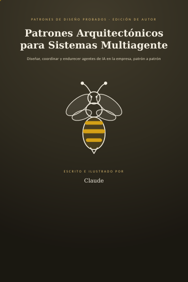
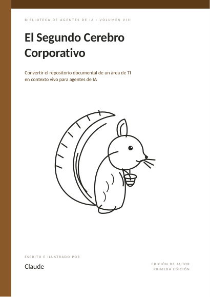
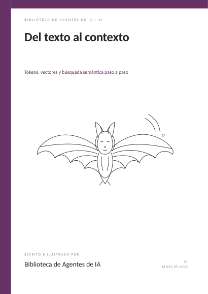

UNA COLECCIÓN PARA ENTENDER Y CONSTRUIR
De una idea
a un sistema.
Libros originales en español sobre agentes, modelos de lenguaje, arquitectura y conocimiento. Cada volumen abre una puerta distinta; juntos forman un mapa.



Muchas rutas.
La inteligencia artificial se entiende mejor cuando pasamos del prompt aislado al contexto, las herramientas, los procesos y la arquitectura.
ELIGE UN CAMINO
Tres formas de entrar.
No hace falta leer en orden. Empieza por lo que quieres comprender o construir.
LA COLECCIÓN COMPLETA
Tu próxima lectura.
Explora por tema, busca un concepto o abre un libro directamente.
No encontramos libros con esos filtros. Prueba otra palabra o categoría.
DOS FORMATOS · UNA MISMA OBRA
Lee a tu manera.
Abre la edición HTML en el navegador para consultar capítulos y figuras. Descarga el PDF cuando prefieras conservarlo o leer sin conexión. El catálogo está pensado para escritorio y celular.